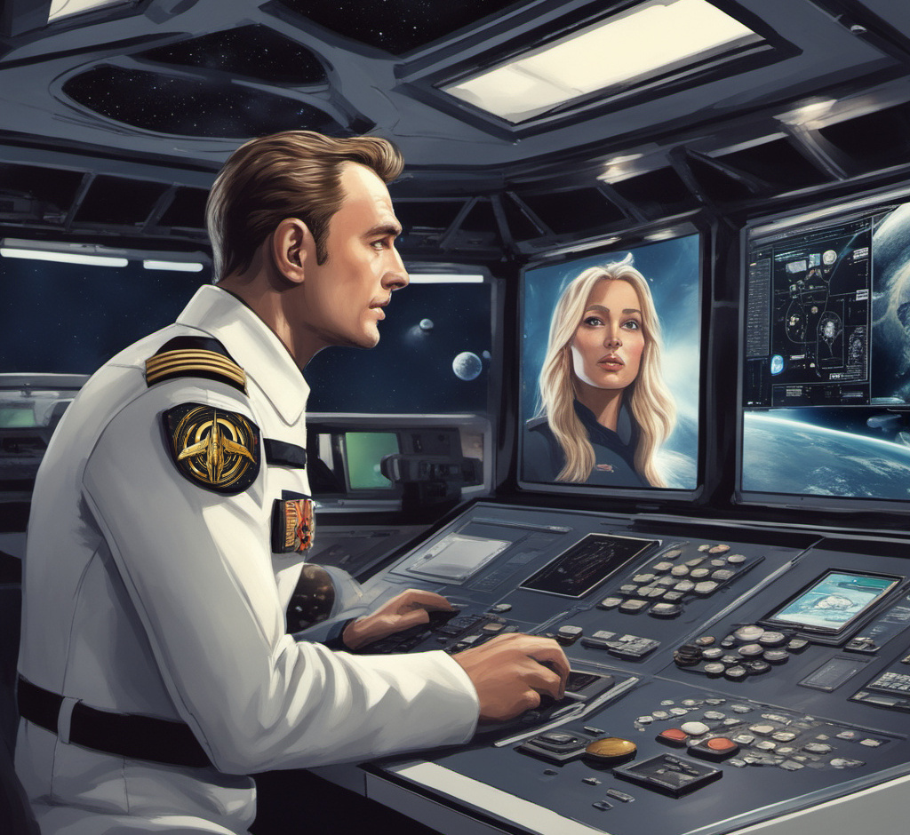

Machine-learning in narrative gaming
Installation of CTransformers module for python bindings of transformer large language models, implemented in C/C++ using GGML library, with CUDA support for parallel compute on GPUs.
! pip install ctransformers[cuda]
Collecting ctransformers
Downloading ctransformers-0.2.23-py3-none-any.whl (9.3 MB)
━━━━━━━━━━━━━━━━━━━━━━━━━━━━━━━━━━━━━━━━ 9.3/9.3 MB 19.4 MB/s
Collecting huggingface-hub (from ctransformers)
Downloading huggingface_hub-0.16.4-py3-none-any.whl (268 kB)
━━━━━━━━━━━━━━━━━━━━━━━━━━━━━━━━━━━━━━ 268.8/268.8 kB 30.7 MB/s
Installing collected packages: huggingface-hub, ctransformers
Successfully installed ctransformers-0.2.23 huggingface-hub-0.16.4
Collecting nvidia-cublas-cu12 (from ctransformers[cuda])
Downloading nvidia_cublas_cu12-12.2.4.5-py3-none-manylinux1_x86_64.whl (412.5 MB)
━━━━━━━━━━━━━━━━━━━━━━━━━━━━━━━━━━━━━━━ 412.5/412.5 MB 2.5 MB/s
Collecting nvidia-cuda-runtime-cu12 (from ctransformers[cuda])
Downloading nvidia_cuda_runtime_cu12-12.2.128-py3-none-manylinux1_x86_64.whl (845 kB)
━━━━━━━━━━━━━━━━━━━━━━━━━━━━━━━━━━━━━━ 845.8/845.8 kB 68.1 MB/s
Installing collected packages: nvidia-cuda-runtime-cu12, nvidia-cublas-cu12
Successfully installed nvidia-cublas-cu12-12.2.4.5 nvidia-cuda-runtime-cu12-12.2.128
LLaMA 2 pre-trained large language model initialised via a Hugging Face library from CausalLM class with GPU acceleration.
from ctransformers import AutoModelForCausalLM
model_id = 'TheBloke/Llama-2-7B-Chat-GGML'
llm = AutoModelForCausalLM.from_pretrained(
model_id,
model_type='llama',
gpu_layers=110,
)
Fetching 1 files: 100% ✓ 1/1 [00:00<00:00, 1.98it/s]
Downloading (…)ca8f5daf/config.json: 100% ✓ 29.0/29.0 [00:00<00:00, 1.74kB/s]
Fetching 1 files: 100% ✓ 1/1 [00:20<00:00, 20.95s/it]
Downloading (…)chat.ggmlv3.q2_K.bin: 100% ✓ 2.87G/2.87G [00:20<00:00, 260MB/s]
encounter =
'''In our fictional story, give three ideas for what
happens
when pirates capture Space Station
Lagrange'''
narration = llm(encounter)
print(narration)
1. The pirates demand that the station's scientists perform experiments to prove their theories of a "space-time continuum" are correct.
2. The pirates hold the station's crew hostage and threaten to kill them if they don't get what they want.
3. The pirates steal valuable technology from the station and use it to upgrade their own spacecraft, making them a match for any space force that dares challenge them.
Utopia fallen
The Commonwealth spanned a thousand light years. Yet losing the local jump gate reinvented cash. Now even communications cost money. A young Captain keeps his message short. "Hi Honey. I miss our life before the Navy. I wish I'd stayed freelance and never 'volunteered'. Everyone's so suspicious since The Attack, but reputation still opens doors. The Admiralty promoted me to counterespionage and I found pirates plotting to ransom our new gate. I'm trying to stop them. Happy hunting." The Captain copies his brain state and launches spy drones.
Time passes faster for his girlfriend travelling near the speed of light. She'll jump straight home after reaching the next star - assuming nobody blows up the gate again - but he'll still appear decades older. Her ship holds one end of the new wormhole. Everyone knows the vital importance of rebuilding the gates. What kind of enemy appears from nowhere, strikes a devastating blow, and then vanishes? Via the distant wormhole her boyfriend's censored message plays. "Hi Honey … beep … Happy hunting."
Image generation
Stable Diffusion also supports in-game storytelling by generating tailored images on demand.
